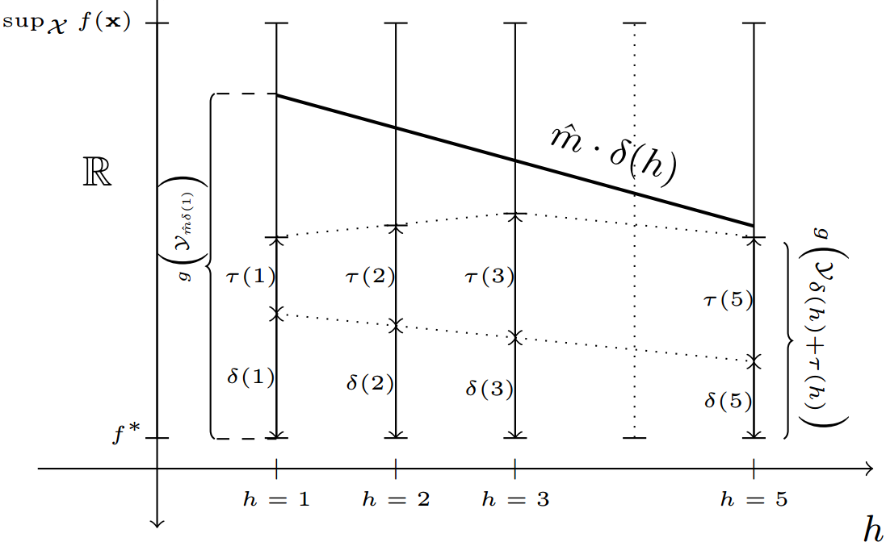
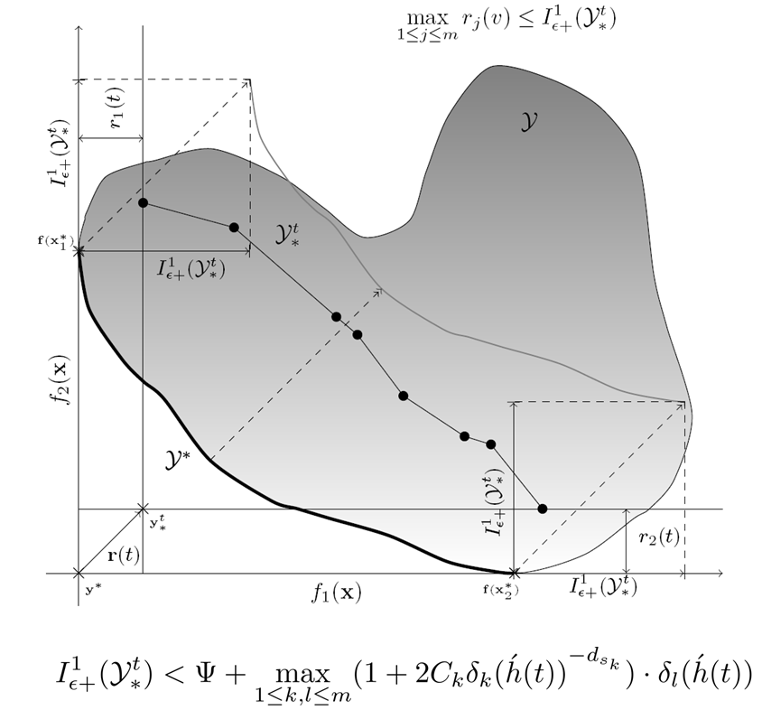
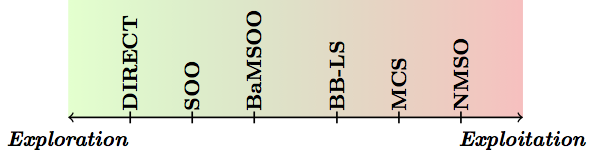
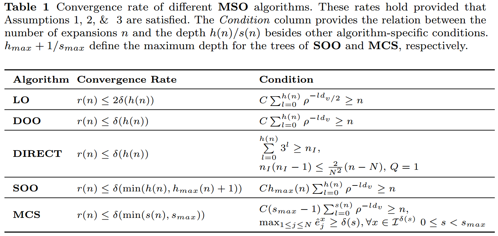

Research
In a nutshell, I seek solutions for black-box optimisation problems, be they single- or multi-objective, continuous (so far) or discrete (future interest): designing efficient algorithms with a theoretically-provable performance.
Below are some research highlights in a reverse chronological order.
Some of these have been the focus of my Ph.D. [slides].
EmbeddedHunter: an embedded multi-armed bandits algorithm for large-scale black-box optimization [AAAI paper, code, poster].

Convergence Analysis for Multi-Objective Optimization: A finite-time bound on the Pareto-compliant additive epsilon indicator down to a problem-dependent measure, namely the conflict dimension [paper, demo code].

NMSO: the Naive Multi-scale Search algorithm for expensive black-box optimisation.
It was the second runner-up out of 28 algorithms in the BBComp’15 competition [paper, code].

